Executive Summary
At Hawaii Information Consortium, our goal is to bring government services to the people. We do this by partnering with over 95% of all government agencies in Hawaii, who work with us to bring online services to the citizens of Hawaii. We offer public facing, easy-to-use, always-on internet services, most of which are completed at NO cost to the State of Hawaii or its taxpayers. The genius of our self-funded model, and how we are actually able to deliver on the promise of fast-tracked, customer-responsive eGovernment solutions, is that we pay attention to our partner's constituent populations and actively provide services that they need in the way that they need it. It is very easy for our partners to work with us because we have made it clear that we are looking out for their best interests and we work on solutions to their most painful problems. This makes us the best partner they have ever had.
In 2014, we received 11 national and local awards recognizing our services created in cooperation with our partner, State/County Agencies. Highlights include being honored with the prestigious Best of the Web Overall Winner - which represents the best government website in the nation.
As of October 31, 2014, we processed over $1.6 Billion in payments for our partners and launched 11 new services, including our first application with the City & County of Honolulu for absentee voters and the nations first attempt at gamifying government through my.hawaii.gov. 17 applications had major upgrades or rewrites during this reporting period. We also launched 4 new websites all developed using WordPress and 1 mobile app.
Throughout 2014, HIC provided over 23,000 man-hours of labor to our partners at no-cost by leveraging HIC's self-funded portal contract. We also provided avoided cost savings of over $5 million.
We see more opportunities to save our partners at least $10 - 15 million in the near future.
Since 2012, HIC has contributed more than 800 hours to various volunteer efforts and we remain steadfast in our commitment to our company culture and the well being of our staff. This year, one staff member was lucky enough to partner with Google and the Department of Land & Natural Resources to help map hiking trails on Oahu using the Google Trekker panoramic camera. In 2013, HIC was the recipient of the 2013 Team of the Year award for our volunteer work and and our staff continues to collectively and individually take part in countless fitness and volunteer activities, including: weekly tennis and basketball games, runs, swims, beach cleanups, triathlons and lesser known activities such as escrima and running 100 mile mountain foot races. For the past 4 years running, HIC has received a Best Places to Work award including separate awards for being the fittest and most family friendly employer. We came in at number one again this year and we hope to continue our reign in 2015.
Looking towards the future we look forward to the release of many more services including an electronic Medical Marijuana Registry, Vital Records System, Business Monitoring, as well as the opportunity to secure the renewal of our portal contract for another 3 years.

2014 Highlights
Awards
HIC has been honored to receive the following awards for our work in 2014. A full history of awards can be found at: portal.ehawaii.gov/page/awards
| 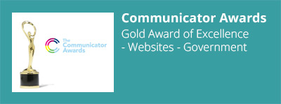 | |
| 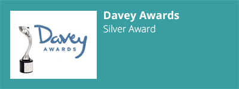 | |
| 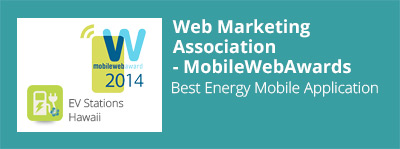 |
HIC Wins #1 Best Place to Work - Small Business Category
In 2014 HIC was recognized as a winner in the annual Best Places to Work in Hawaii by Hawaii Business Magazine. For four years in a row, we have continued to place in this popular contest against businesses in Hawaii, and we continue to remain on top due to our flexible schedules, fantastic benefits and happy employees.

Hawaii.gov is the Best Website in the Nation

In 2013, Hawaii set a new standard for state websites by delivering the most striking changes and groundbreaking enhancements to a web portal in recent history. We set out to reinvent how citizens work with government by migrating from a decentralized, essentially standard-less set of portal and department websites to a sty-namic (static + dynamic) web portal and a cloud-based, open-source (WordPress), mobile first presences. The design also brought the beauty of the Hawaiian Islands to the forefront
In 2014, continuing our ambitious goal of the reinvention of government as we know it, we upped our game to bring the focus to the individual user. Taking a first-of-its kind approach to the gamification of government, we created a new one-stop shop allowing Hawai’i residents to completely customize how they interact online with the state on any device, anywhere, anytime – securely and reliably. The result, my.hawaii.gov, integrates with seven of the 17 departments and includes a rich, personalized history of all business conducted online with the state. It also directly integrates with almost 60 of the 100+ online services offered in Hawaii.
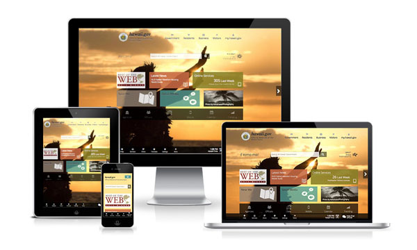
mySavings, a service within my.hawaii.gov, aims to show citizens exactly how much they are saving by conducting their business with the government online by creating awareness around the amount of paper, miles and time saved. A first of its kind gamification of government, it even gives helpful, Hawaii-centric tips for what users can do with their new found time! For highlights of the great new features, visit m.hi.gov/myhi.
In October 2014, our efforts were rewarded. Hawaii.gov was honored to be named this year’s “Best of the Web” state portal by the Center for Digital Government, which recognizes the best of all government websites across the country. The awards program is the original and most respected state and local government website competition in the United States, honoring outstanding government portals and websites based on their innovations, functionality and efficiencies.
Additional upgrades included:
- Language translation
- Geo-location mapping service allows visitors to find government offices, EV stations, farmers markets, and more.
- 273 social media pages, 1,200+ twitter followers, a Flickr photo pool, and 20 YouTube videos
For fun, we've also created the error page of Armageddon - portal.ehawaii.gov/404, a secret konami code, and a changing design based on time of day.
Hawaii.gov is a product of a collaboration between the Office of Information Management and Technology (OIMT) and the State Internet Portal Provider Hawaii information Consortium LLC (HIC).
Portal Buzz
That's it. I'm moving to Hawaii. They have the best government website. http:// statescoop.com/hawaii-gov-tak es-home-best-government-website-honor/ …
- Angel Quicksey @AngelQuicksey
Press Releases
| Title | Link | Date |
|---|---|---|
| Hawaii Sex Offender Search is Now Available for Downloading as Mobile App | http://bit.ly/1FoBdcG | 01/08/14 |
| Hawaii Freshwater Game Fishing License Application Now Mobile | http://yhoo.it/1rezAvo | 01/13/14 |
| Mobile Compatible Insurance License Search Launched in Hawaii | http://bit.ly/1CczEjU | 01/31/14 |
| Access to Thousands of Licenses Now Available on Mobile Devices | http://1.usa.gov/1y9VM9u | 02/24/14 |
| DBEDT Launches Online Tax Credit Research Activity (TCRA) Survey | http://1.usa.gov/1FpCOx5 | 03/14/14 |
Hawaii Information Consortium Selected as a | http://bit.ly/1rqkFc2 | 04/15/14 |
Hawaii DLNR Launches Online Permitting for | http://bit.ly/1tsdYGc | 04/22/14 |
| Hawaii.gov Wins Gold Communicator Award | 04/29/14 | |
| Hawaii Delivers Your Government - Your Way | http://yhoo.it/1zW7Lrj | 05/12/14 |
| Hawaii.gov Wins Best In Class Award | http://bit.ly/1uDyILl | 06/25/14 |
| State Launches Revamped Business List Website | http://1.usa.gov/1FoBv3d | 07/30/14 |
| Hawaii.gov Wins “Best Government Website” Award | http://1.usa.gov/15rrZ2I | 09/15/14 |
| Hawaii.gov takes home ‘Best Government Website’ honor | http://bit.ly/1FpD4Mp | 09/16/14 |
| Hawaii Wins Two Major Awards for Hawaii.gov | http://bit.ly/1vkk8xf | 09/22/14 |
| Hawaii Gamified to Drive Up Adoption | http://bit.ly/1vKYFzO | 09/26/14 |
| Hawaii.gov Wins 2014 ‘Best of the Web’ National Award | http://1.usa.gov/1vLnGu9 | 10/07/14 |
| Hawaii.gov Receives Silver Davey Award | http://bit.ly/1vKYIf4 | 11/05/14 |
Trending Stats & Numbers
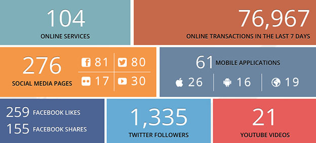
Top 10 Services | |
|---|---|

Cost Savings
Applications built by HIC save our partners hundreds of thousands of dollars each year. Our services allow them to avoid paying for data entry labor, paper, mail and postage costs. These are the only costs factored into in our avoided costs estimates. Portal services in 2014 resulted in avoided costs of over $5 Million. All reports are as of Nov 20, 2014. The numbers should increase by at least 8% by the end of the year.
Department of Commerce and Consumer Affairs
Business Registration Division
Avoided costs are over $600,000 to date for 2014. Avoided costs include printing, postage, and data entry costs. No IT-related costs are considered.
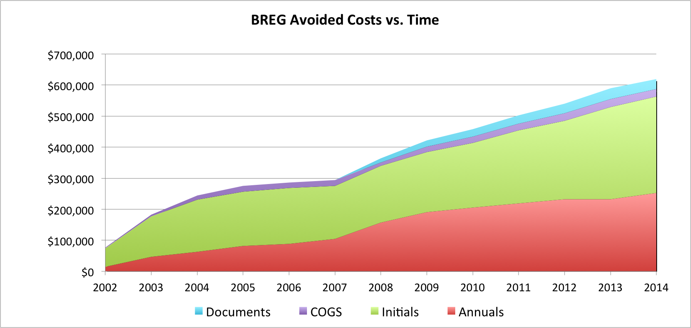
Professional & Vocational Licensing
Through online transactions, savings are achieved through saved postage and printing of renewal application forms, data entry required from paper renewals. Based on the number of online renewal transactions since 2001, PVL saves over $200,000 per year and has saved over $1.6M through the online renewal program.
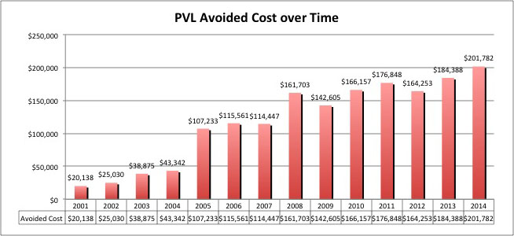
Insurance Division
Highlights include:
- 95%+ online adoption
- Upgraded the renewal application to handle new annual renewal requirements
- Re-design and launch of mobile insurance license search scheduled in Q4 2013
- Avoided cost near $300K as of September 2014
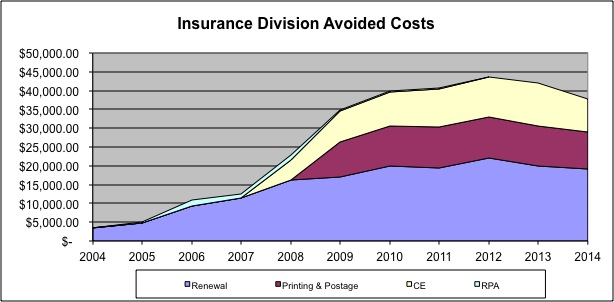
Department of Land and Natural Resources
The avoided cost for DLNR Permits is estimated to exceed $200K by the end of 2014. The avoided cost includes all licenses and permits issued through the eHawaii.gov program and only considers data entry time.
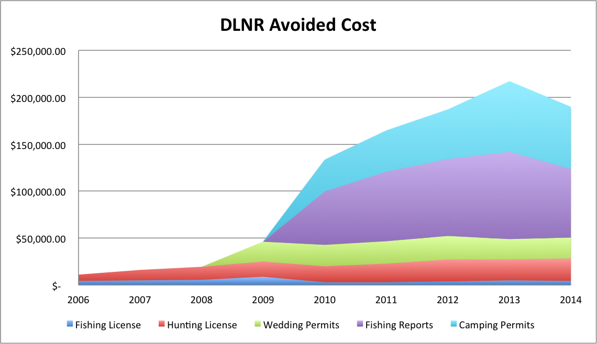
Department of Taxation
As a result of portal applications Tax has significantly decreased costs. Major areas of savings include: eFile and MeF Tax Returns, BB1 filings, UC-1 cashiering, and the tax license search. We do not include any IT-related costs, only other quantifiable costs associated with the handling of returns, printing, mail and data entry. In 2014, our free services saved the state over $3.5 million. With further engagement we estimate that it could be closer to $10 million.
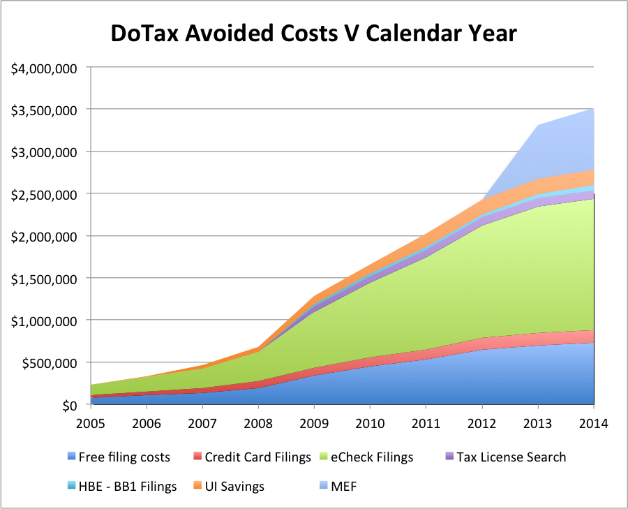
Hawaii State Judiciary
eTraffic
This is a cost savings analysis for the eTraffic application developed by HIC for the Hawaii State Judiciary. It shows avoided fees by having the service available online.
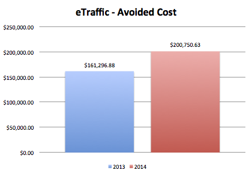

Delivering Value... at the Speed of Light

Traditionally, HIC has developed software applications using the waterfall model, a sequential development process. While this methodology works, there are a few downfalls. The waterfall approach does not accommodate change very well. Requirements are defined upfront and are not expected to change throughout the software development life cycle. Using this approach, if a partner requests a change during the testing phase, it would require a great deal of time and effort to accommodate a major change. These changes are not discovered until the application has been completely developed which may cause copious amounts of recoding and retesting. Another issue HIC faced was difficulty in gauging development progress. A project manager may ask a developer how work is progressing and he/she may reply with a vague answer. Accountability was lacking. HIC needed to implement a more flexible, collaborative, and reliable methodology.
In 2011-2012, HIC slowly moved more towards a "deliverables" approach; delivering small pieces of functionality to our partners sooner. A project is broken down into modules or portions of functionality so HIC can develop and deliver these modules incrementally. This helps immensely in getting partner buy-in and getting their final acceptance of the application to launch to production. Over the past year and a half, HIC has adopted an agile approach on a few projects and have seen great success. Agile project management is an iterative and incremental method of managing the design and build activities for engineering, information technology, and new product or service development projects in a highly flexible and interactive manner.1 Specifically, we have adopted the scrum framework to encourage creativity and enable teams to respond to feedback and change, and to build exactly and only what is needed.2
Work is broken down into tasks that can be completed in two days or less and with daily scrums, progress is transparent to all project team members. The daily scrums encourage collaboration and builds team synergy and increased accountability among the team. The HIC agile project team has also reported an increase in transparency of work items and overall status of the project, clarity of tasks/responsibilities among the team, and increased partner engagement and trust. Because the tasks are better defined, we are able to produce a more quality focused application. All of these factors are key to a successful project.
One key agency that has embraced the agile approach is the Department of Labor and Industrial Relations (DLIR) Hawaii Occupational Safety and Health Division (HIOSH). Using the agile methodology to create an elevator inspection and permitting application for HIOSH, HIC develops portions of the application in two week sprints and is able to show new features to the HIOSH team every two weeks. By incrementally demonstrating functionality to the partner, HIC has been able to successfully build partner trust and engagement.
To help educate our staff on agile concepts and practices, our project managers, partner liaisons, quality assurance analyst, and management staff participated in a three day agile training course. HIC also sent two employees to the Atlassian Summit in San Jose, CA in September to be further educated on a number of tools including Confluence, JIRA, and JIRA Agile and to help improve our ability to practice agile concepts. We have seen great improvements in our process over the years and will continue to integrate agile methods into more of our projects and expand the knowledge to the rest of our staff.

Customer Satisfaction
In 2014, we went through an intensive effort to upgrade our customer service tracking and reporting system. After thorough review of numerous third-party programs available, we selected FreshDesk for its ease of use and tracking capabilities. FreshDesk gives us comprehensive reporting for calls, chats, and emails in a single location, with just a click of a button. We can track all forms of communication as to how they were received, the name of the service the inquiry was regarding, and provide customer satisfaction reports for both chats and emails.
In addition, FreshDesk allows our government partners to submit inquiries to their own queue which automatically get assigned as urgent. This ensures that our partners always get their answers as quickly as possible. From January 1, 2014 to October 31, 2014, HIC's customer service department handled 49,644 inquiries, an increase of over 16,000 since the year prior. With the increase in calls, it is imperative that we have a tool that properly reflects our efficiency and tracks data correctly.
Customer Service - Statistics
Number of Phone Calls by Service - Table
Below are the statistics for the total of contacts from January 1st through September 30th 2014 with a breakdown showing the most common calls by specific service.
Service | Calls | Service | Calls | Service | Calls |
|---|---|---|---|---|---|
| Airport Auctions | 9 | Hawaii County Camping | 293 | Non - HIC information | 897 |
| Annual Reports | 1,087 | Hawaii Business Express | 1,647 | Notary | 841 |
| BOC Search | 1,442 | Hawaii Compliance Express | 7,693 | Payment Questions | 182 |
| Business Registrations | 2,508 | Hawaii Health Connector | 106 | Professional & Vocational Licensing | 9,771 |
Child Support Enforcement Agency | 97 | Insurance License Renewals | 559 | Real Property Tax Payments | 203 |
| Dept. of Labor (non HCE) | 129 | Hawaii State ID | 53 | Sex (Covered) Offender | 28 |
| DLNR Boating Division | 175 | Hawaii Unemployment Insurance Express | 516 | State Calendar | 110 |
| General DoTax (non-HCE) | 594 | Hunting and Fishing | 269 | State Camping | 2,581 |
| DoTax (non-HCE) referred | 459 | HIePRO | 706 | Subscriber | 166 |
| eCrim | 969 | Hawaii Teacher Standards Board | 1,271 | TA-326 | 37 |
| Efile | 539 | Login Questions | 4,594 | Vital Records | 3,140 |
Electronic Marriage and Civil Union System | 2,538 | Misc - HIC | 1,091 | Wastewater Permits | 10 |
Employee Retirement System | 12 | Motor Vehicle Renewals | 415 | Water Payments | 36 |
| eTraffic | 609 | Na Ala Hele | 12 | Wiki (Weddings) | 120 |
| Film Permits | 35 | Narcotics Enforcement | 549 | TB Registry | 38 |
HIePRO | 706 |
Total Phone Calls Listed HIC by Service - Graph
Below is an alternate view of the statistics for the total of contacts from January 1st through September 30th 2014 with a breakdown showing the most common calls by specific service.

Feedback
With FreshDesk, when an inquiry is made, the user is eligible to rate the customer service representative that handled the questions and provide supporting comments. FreshDesk also gives points to the Customer Service team members and rates them as Most Valuable Player, Customer Wow Champion, Sharpshooter and Speed Racer. This is an added motivator and encourages the team to answer tickets promptly, courteously, and efficiently.
Below is a sampling of comments given to our HIC team members by actual customers.
"Twice now I have been in contact, and both times I've had a speedy and polite response! Thank you so much! You've been very helpful and I cannot wait to visit Hawaii! Best wishes."
"I received always the answers very quickly, considering different time zones, as if I was the only client that you have (and I know you have a lot of requirements from people)!!! Thank you Support Team! Mahalo."
"You folks are awesome, efficient, and professionals!!!! You are an asset in the government sector. I am not a high-tech individual but your help made my life easier. Thank you very much again."
"The representative, Jamie, was incredibly helpful and very knowledgeable in what access I needed for my dept. Please extend my thanks to her and your entire staff."
"I am in deep appreciation for your immediate response to my questions thank you so much for your time and for making my experience with your office a pleasurable one!"
"Everyone I came into contact with in order to get my license were a huge help. Over the phone and at the office. They were very friendly and understanding since we come from the other side of the island."
"Bobby was very helpful—he answered right away and came up with a solution promptly. He also communicated very well. Great job!"
"The response time to my inquiry was excellent! Thank you, it is refreshing and appreciated!"
"Nick was very responsive and helpful. Directed me in the right direction to get my questions answered. THANK YOU!"
Meet the Team
| Jamie Kinion |
|---|
 |
| Jamie joined HIC in 2011 as a "Temp" hire and soon moved to Customer Service. After learning the ins and outs of customer service, Jamie took reins as Customer Liaison to lead the team in July 2012. |
| Nick Choy |
|---|
 |
| Nick has been with the team since February 2014. He came to HIC with over 9 years of customer service experience. Nick is proud & happy to assist users engage in Hawaii government via HIC services. |
| Bobby Bundac |
|---|
 |
| Bobby is the newest addition to the Customer Service team. He is thrilled to be with one of Hawaii's Best Places to Work and, like Jamie and Nick, truly enjoys helping people. |

Partner Testimonials
"eHawaii.gov has been responding to hundreds of online chats regarding inquiries for the PVLD. We appreciate the enthusiasm and selfless support of the eHawaii.gov staff and the Customer Service department in attempting to field and respond to queries from the consuming public on behalf of the PVLD. Kudos to eHawaii.gov!!!"
"The Hawaii Criminal Justice Data Center has worked with the Hawaii Information Consortium (HIC) on several projects with varying scopes. HIC has proven to be a competent partner that often brings new and innovative ideas to the table."
"The Department of Health, Office of Health Status Monitoring’s partnership with the Hawaii Information Consortium (eHawaii.gov) has spanned 10 years. eHawaii.gov has been a great, responsive partner in the development and implementation of our various online services, the most notable has been the death and marriage/civil union registration systems, both of which won national digital awards."
"HIC and their project managers...have helped us achieve our vision of making government data open and accessible to the public."
"HIC has worked with BREG DCCA for years to help us provide one of the most innovative, online State business registries in the country."
"Working with HIC gives credibility to the Judicial Performance Program. The results are undisputed..."
"HIC helped guide us through a conversion from an antiquated in-house permit system to an on-line web portal that effectively changed the way we do business."
"The HIC staff assigned to work with us on the eBench Warrant project were always helpful, professional and very supportive."
"Highly professional and upbeat, HIC clearly takes pride in providing exceptional customer service."
Spotlight on the Design Team
There has been great change and growth with the HIC Design team over the past three years. Prior to 2011, the Design team was a one-man show. When Patrick Nakamura joined HIC as Creative Content Designer in August of 2010, image mockups were acceptable deliverables, but "clickable prototypes" was the desired direction. At the time, Ethan Marcotte’s article “Responsive Web Design”1 was just a few months old. By mid-2011, we began developing Responsive web apps.
Growing the Team
In 2012, HIC started, what turned out to be, a two-year process to rethink, revamp, and redesign the Hawaii portal website. This raised the bar for government web design and set a new standard for HIC-made websites and web apps. With tablets and smartphones already surpassing global growth predictions, we knew we had to work smarter and better. Now, as Creative Services Manager, Patrick leads the Design team that boasts two phenomenal frontend/web developers, Corey Rothwell and Jenly Chen.
Meet the Team
| Corey Rothwell | |
|---|---|
Corey studied Computer Science in college and much of his frontend development expertise is self-taught. He truly enjoys coding & learning and has a unique ability to read something and immediately apply the new knowledge. This serves well at HIC as we continually improve our techniques and processes. Corey was instrumental in planning and creating the HIC Web Application framework, and he refined it for his frontend work. Corey is Frontend Developer on HIC’s current Agile teams. |
| Jenly Chen | |
|---|---|
Jenly has a background in Computer Science & Management Information Systems, and he first joined HIC as a WordPress developer on the CMS team. He is constantly learning about the latest tools and techniques. Jenly was a lead developer on our award-winning portal revamp. Then, after teaching himself how to build hybrid mobile apps, he became HIC’s go-to mobile app developer. In May, he joined the Design team as a Frontend Developer. By expanding his repertoire once again, Jenly will play a key role in helping the Design team take HIC web apps to the next level. |
| Patrick Nakamura | |
|---|---|
Patrick has formal training in several design disciplines. While studying graphic design in the ‘90s, he saw the birth of the Web. Since then, Patrick experienced and enjoyed the evolution of web design over the years. Since he started learning Responsive web design, Patrick has rediscovered a passion for design in the ever-changing "ebb and flow"2 of the Web. |
Learning to be Agile
In 2012 and in the wake of the portal overhaul, HIC’s app development was in transition. We asked ourselves, How can we improve our app development approach/process to yield better products and more engaged developers & partners? In 2013, we decided to try Agile. This proved challenging for most who were accustomed to a linear development methodology. During the past year and several semi-Agile projects, we had some growing pains and on-the-fly adjustments, but we saw great results and our partners were happy!
Today, HIC is fully committed to being Agile, and we adopted Scrum as our base process framework. Recent training allows managers to mix their recipe of Scrum for HIC. With some Agile projects and lessons learned under our belts, the Design team is eager to participate in the HIC-specific Scrum. The Design team will continue to learn & grow and collaborate on Agile teams to develop outstanding services. Where are we headed and how far can we go? We believe the sky’s the limit.
1 http://alistapart.com/article/responsive-web-design
2 http://alistapart.com/article/dao
New Services Spotlight
Absentee Voter Ballot - City and County of Honolulu

HIC is excited to announce the release of our first application developed in partnership with the City & County of Honolulu! Their need was straightforward - transform a burdensome emailing ballot process to voters outside of the U.S. The partner was knowledgeable about the processes involved, the changes desired, and the deadline was external based on the upcoming election. Two HIC developers worked quickly and closely together to produce a service that surpassed the partner's expectations.
Voters residing outside the U.S. now can receive an email with a single attachment that includes all required documents for them to send in a ballot without delay. Email notifications keep the election officials up-to-date regarding database updates and when emails were and were not sent. A report provides a log of all actions with the data, including voter downloads of ballots. And if a voter loses the email or decides they want an electronic ballot at the last minute, the election official can direct them to a web site where they can enter key information and download their ballot immediately.
We hope that this experience will be the first of many projects with the City and County of Honolulu!
MyPVL - Department of Commerce and Consumer Affairs
MyPVL (pvl.ehawaii.gov/mypvl) is a dashboard used by professional and vocational licensees to access their license information and services in a single location. Previously a single licensee needed to access three or more websites to conduct business with the DCCA, Profession and Vocational Licensing (PVL) Branch. MyPVL consolidates these three services into a single location.
Features include: license renewal, access to check on continuing education requirements and status, and a search to view their licensee information, i.e. status, expiration date, etc. Licensees may also track their application status, view their historical transaction information as well as see any past license renewal history.
The service was created in partnership with PVL under the my.hawaii.gov initiative.
HIC Streamlines Procurement in Hawaii
Introduced in August 2013, the Hawaii Electronic Procurement (HIePRO) System has experienced high user adoption and widespread acceptance throughout 2014. A successful replacement of the previous e-procurement system, HEPs, HIePRO was implemented and maintained by HIC at no cost to the State of Hawaii or SPO. Designed to include and surpass all functionality that existed in HEPS and other eProcurment systems available, our goal was to also simplify the process steps to make them more streamlined.
The end result has produced an application that provides a consistently positive user experience that also addresses all accessibility (ADA) requirements. Extensive workflow processes have been migrated into the system to reduce unnecessary manual steps. Innovative ideas for future development have been recorded for future development on a platform that has gained national interest from numerous states across the country. A cohesive and well trained customer support team effectively uses online chat, web based collaboration and ticketing systems, text messaging and email to work with the SPO and HIC project teams to ensure the highest levels of user satisfaction.
A successful pattern of improvements/enhancements continues to push HIePRO to the forefront of electronic procurement solutions. Most importantly, the users and SPO regularly and consistently compliment HIC on the ease of use, and now have become part of the collaborative fabric by requesting new features and/or subtle adjustments for future consideration.
Throughout 2014, HIePRO passed the projected first year goals for dollar amount of contracts awarded, number of solicitations, and number of awards. These successful milestones have pleasantly surprised the HIePRO project teams, who were concerned that vendors and new users would be slow to embrace the new electronic procurement solution. Calendar year 2014 shows monthly HIePro adoption gains between 15 and 40% in numerous categories related to solicitations created and awarded.
Key Features
- A public search function, which contains limited information, allows the general public to search for solicitations and awards.
- Users must log in to the system to see detailed information.
- This real time presentation of public information resolved many issues regarding the double posting of information and the varied lag times related to the process of the previous system.
- One of the key requirements for vendors to be awarded a contract is vendor compliance as required by the State of Hawaii and specifically, the SPO. A key feature of the vendor profile includes up to the minute cross checking of the compliance status with another HIC-SPO collaborative service Hawaii Compliance Express (vendors.ehawaii.gov). Most of the vendors who use HIePRO were already users of the HCE system and were able to use the same login for HIePRO.
- HIC handles customer support for HIePRO through chat email and phone to ease burden on SPO staff.
Vital Records 2.0 - Increased Speed for Vital Record Delivery
The Hawaii portal has been offering a virtual records ordering service since 2002. Since the inception of the Real ID Act, the demand for birth and marriage records has skyrocketed. Since 2012, the VRO office has been seeing a 16% increase in the amount of orders processed. With over 300,000 certificates issued annually, combined with a 38% reduction in work force due to retirement and budget cuts, the DOH has struggled to keep up with order fulfillment due to a severe lack of staff resources. As a result - mail and online orders were not being filled within the Department’s 2-week service level agreement, and long lines of requestors at the DOH offices became the norm - resulting in wait times of up to an hour. Mail and online orders had an average delay of 4-6 weeks. One of the critical areas of concern was that VRO staff tended to not have information regarding the order available - so when a requestor called to inquire about their order status, they were often not given a response, resulting in stress and frustration from both the public and the VRO staff. At the same time, the existing process flow of the old system is no longer adequate with the growing demand for a quicker service.
As part of the OIMT business process re-engineering (BPR), HIC conducted a two-month study to document the current VRO internal work processes. HIC also utilized in-person surveys to get more useful data from the general public who were waiting in line. The information gathered in the survey supported the premise that the development of a Vital Records Ordering and Tracking Systems (VROTS) would aid dramatically in both improving the overall customer experience and streamlining back office operations.
With promising survey results, HIC began development on the new system and work was completed in October 2014. Designed to be a central depository of all vital records orders, it now includes all over the counter, mail-in and online orders in a single location. The new online ordering and tracking system offers a much improved user experience for both the public and DOH staff. Furthermore, any government agency who currently requires paper certificates from the individual, can adopt to receive electronic notices. Each order has a unique tracking number for tracking progress, staff and public have the ability to check real-time status updates for orders placed online, and search results have been improved.
The application will be live to the public in January 2015. Future enhancements will include electronic delivery and verification of certificates as well as expedited services, which is arguably the most highly requested service we receive from year to year. We anticipate the new system will lead to happier customers and happier staff and we look forward to its official release!
| Before |
|---|
| 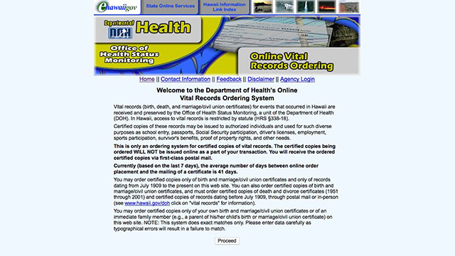 |
| After |
|---|
| 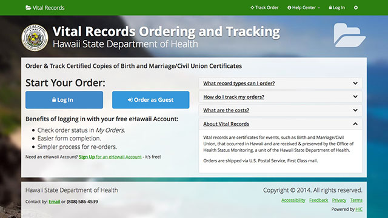 |

New Services and Websites
New Applications/Services Launched (11)
| Name | Agency | Mission | Non | Description | URL | Launch Date |
|---|---|---|---|---|---|---|
| Appellate Court Judge Evaluation | Judiciary | No | N/A | Evaluations of 10 Appellate Court Judges via online survey. | N/A | 01/02/14 - 01/31/14 |
| Name Change | Lieutenant Governor's Office | No | No | Apply and pay for a name change online, and track the name change process. | namechange.ehawaii.gov | 02/25/14 |
| MyPVL | DCCA PVL | Yes | Yes | MyPVL is a new home for all PVL licensees to access information and services 24/7 from a single dashboard. | pvl.ehawaii.gov/mypvl | 02/28/14 |
| Commercial Vessel Permits | DLNR DOFAW | No | Yes | Provides an expedient way for vendors to register and purchase landing permits to regulated Department of Land and Natural Resources sanctuaries. | dofaw.ehawaii.gov/permitting | 02/28/14 |
DBEDT Tax | DBEDT HTDC | No | N/A | Allows Qualified High Technology Businesses (QHTB) to apply for the Tax Credit Research Activity credit via an online form (DBEDT-346). | http://bit.ly/1vkmpJ0 | 03/13/14 |
| Family Court Judge Evaluation | Judiciary | No | N/A | Evaluations of 10 Family Court Judges via online survey. | N/A | 04/16/14 - 05/12/14 |
| Portal Gamification | HIC | No | Yes | Cohesive and unified gaming platform which integrates game mechanics into applications in order to drive adoption and engagement. | portal.ehawaii.gov/myhawaii | 04/30/14 |
| Hunter Registration | DLNR DOFAW | No | No | Allows individuals to submit an electronic application to be entered into a lottery for game mammal hunting on the islands of Hawaii, Lanai, and Kauai. | hunthawaii.ehawaii.gov | 05/28/14 |
| Notification Center | HIC | N/A | Yes | Allows users to sign up for email reminders or monitoring services within various HIC-based applications. | login.ehawaii.gov | 07/11/14 |
| Circuit Court Judge Evaluation | Judiciary | No | N/A | Evaluations of 12 Circuit Court Judges via online survey. | N/A | 07/22/14 - 08/22/14 |
| Election Absentee Ballot Notice | Honolulu City Council: Office of City Clerks | No | Yes | Allows the Office of City Clerks to accept requests for absentee ballots and sends ballots and associated supporting documents to the requestors electronically. | avb.ehawaii.gov | 09/15/14 |
New Websites (4)
| Name | Agency | URL | Launch Date |
|---|---|---|---|
| State Procurement Office | SPO | spo.hawaii.gov | 03/24/14 |
| Major Portal Release & my.hawaii.gov | HIC | portal.ehawaii.gov | 04/02/14 |
| Aquatic Resources | DLNR | dlnr.hawaii.gov/dar | 06/09/14 |
| Hawaii Sharks | DLNR | dlnr.hawaii.gov/sharks | 07/16/14 |
Native Mobile Applications (1)
| Description | Available | iOS URL | Android URL | Web URL |
|---|---|---|---|---|
| Hawaii Sex Offender Search | Apple Store: 01/08/2014 | http://bit.ly/1tseXpU | http://bit.ly/1vL0wVe | sexoffenders.ehawaii.gov |
Major Application Upgrades (17)
| Service | Agency | Non Native Mobile App | Description of Update | URL | Launch Date |
|---|---|---|---|---|---|
| eFile | TAX | No | Annual updates to all forms and fields for 2014 and integration of kala. | dotax.ehawaii.gov/efile/user | 01/02/14 |
Freshwater | DLNR DAR | Yes | Upgraded to a mobile/responsive design. | freshwater.ehawaii.gov | 01/02/14 |
| Modernized eFile (MeF) | TAX | No | Annual updates for 2014 to MeF. | mef.ehawaii.gov/mef | 01/31/14 |
| Real Estate Education Application | DCCA REB | Yes | Upgrades include:
| pvl.ehawaii.gov/rece | 02/18/14 |
| PVL List Builder | DCCA PVL | Yes | Upgrades include:
| pvl.ehawaii.gov/pvllistbuilder | 02/28/14 |
| Charity Registry | AG HCJDC | Yes | Upgraded to a mobile/responsive design. | ag.ehawaii.gov/charity | 03/13/14 |
| Electronic Marriage Registry System (EMRS) | DOH OHSM | No | Upgrades include:
| emrs.ehawaii.gov/emrs | 03/22/14 |
| Electronic Death Registry System (EDRS) | DOH OHSM | No | Upgrades include:
| edrs.ehawaii.gov/edr | 04/27/14 |
| my.hawaii.gov | HIC | Yes | Added three new tiles to my.hawaii.gov including PVL License, HIePRO Solicitations, and HTSB. | portal.ehawaii.gov/myhawaii | 04/30/14 |
| Entity List Builder | DCCA BREG | Yes | Upgraded to a | hbe.ehawaii.gov/listbuilder | 06/03/14 |
| EV Stations | DBEDT Energy | Yes | Upgraded the look and feel and made minor layout modifications to optimize usability. | 06/23/14 06/18/14 06/23/14 | |
| Energy Permitting Wizard | DBEDT Energy | N/A | Upgrades include:
| wizard.hawaiicleanenergyinitiative.org | 06/24/14 |
Real Estate
| DCCA REB PVL | Yes | Upgrades include:
| 07/07/14 | |
| eCrim | AG HCJDC | Yes | Upgraded to a | ecrim.ehawaii.gov | 09/22/14 |
| HCE View Access | DAGS | No | Upgrades include:
| vendors.ehawaii.gov | 09/25/14 |
| ERS Self Service & Benefit Calculator | B&F ERS | No | Upgrades include:
| ers.ehawaii.gov | 09/29/14 |
Vital
| DOH OSHM | Yes | Upgrades include:
| vitrec.ehawaii.gov | 11/18/14 *For Partner Staff Only |
Portal Enterprise Services
The portal provides a number of key managed enterprise services that our partner agencies leverage to improve efficiency, reduce cost and provide services on a day-to-day basis. These services have been developed and are maintained at a significant cost to the portal. Most of these services are leveraged in our self-funded solutions.
Payment Processing
The portal processed payments totaling over $1.6 Billion in CY 2014 (Nov 20, 2014).
Payment processing can take place through the Internet, Over the Counter (OTC), or via mail and includes multiple payment methods:
- Credit card (in-person or Internet)
- Electronic check (ACH)
- Paper check
- Invoice (on account)
- Subscriber payment fees and terms
HIC has established Master Merchant Bank Accounts for processing all types of major credit cards and adds new sub-merchant accounts for each branch, department or division who would like to leverage this relationship at no charge. HIC has negotiated lower rates by leveraging the transaction processing of all state and county partners.
HIC provides our partners and their vendors with Application Programming Interfaces (APIs), application support, and trouble shooting for its Payment Processing Service. The API is a simple web service that can be accessed by any platform. Currently it is being leveraged by systems running on Java, .net, Perl, and PHP.
HIC also provides initial customer support for payment and billing questions as well as help with subscriber account issues (i.e. Sign-up, forgotten password, disabled users, etc..)
Credit Card Processing
Credit cards are well suited for Internet payments because they allow the merchant to obtain a real-time authorization, which validates that the card is in good standing and has adequate funds available. After service is delivered for a transaction, the transaction is placed into a settlement batch for final processing. This batch is then sent to the processing network for settlement. HIC is able to disburse all credit card funds on a calendar day basis (12:00 AM to 11:59 PM HST) instead of the typical batch process (disbursements for each card type on a varying mainland time schedule). HIC also provides partners with automated downloads of fulfillment data for integration with backend systems. Most transactional applications take credit card payments.
ACH Processing (eCheck)
The ACH network provides a quick and effective way of moving money from one bank account to another. The customer provides their bank routing and account number, and this information is placed into an ACH file for processing. These files are processed nightly and the funds are typically deposited the following day. Processing charges are a fixed amount per transaction, unlike credit cards, which charge a percentage per transaction for processing payments. This makes ACH debits a desirable method for processing large payments, as illustrated by the numbers of existing eHawaii.gov customers who pay State Tax payments, Unemployment Insurance, Property Tax and Renewal fee Payments with this method. After a change in policy at the Budget and Finance office in 2012, HIC began originating EFT funds for tax payments directly into the state's bank account. This means that tax payments made online or at offices through HIC payment systems are deposited in the state's bank account the next banking day.
Monthly Accounts/Invoice Processing (Subscriber Account)
The third major payment method is the most traditional in its approach of billing customers for their online service usage on a monthly basis. This payment method is best suited for high volume, low transaction amount business-to-government services, such as driver records, criminal histories, business filings, document ordering and annual renewals. For these services, it is inefficient for a customer to enter payment information for each transaction. Additionally, processing fees associated with processing each transaction individually may be prohibitive. Therefore, the customer establishes an account through a monthly account process and receives an invoice for their total online services usage at the end of each month. Typically the customer then pays by an automatic debit via credit card or a bank account. Customers also have the option to remit payment at any time by paper check via our lockbox address. HIC processes credit card payments or ACH Debit received for the entire invoice amount at the end of each month.
Over the Counter (OTS) Payment Processing
In the some cases a partner wishes to process payments at the point-of-service for over the counter payments, HIC provides Over the Counter payment processing, inventory management and reporting systems to process those payments. Credit card and check scanning hardware are also available.
Outreach
Self-Funded eGovernment entails more than development, managing, hosting and maintaining services for our partners. We also provide outreach and marketing to let the public and businesses know about the services that we create. Of course we also help train government staff on our applications.
| Portal Partners with Coordinated Marketing | Marketing Services Include |
|---|---|
|
|
Secure File Transfer
Many of our partners have security policies that restrict various types of file transfers or communication methods. These span from not being able to support modern secure transfer methods, such as Secure FTP, to policies that do not allow external entities to log in to internal IT assets (a "Pull Only" policy). In some cases file replication and encryption is also required to push data received on behalf of on agency or NGO from the Portal's infrastructure to another partner agency's servers.
Some of the partners who use these services include:
- Hawaii State Judiciary
- Honolulu City and County
- County of Kauai
- County of Maui
- County of Hawaii
- Office of the Attorney General
- Department of Taxation
- Department of Public Safety
- Budget and Finance
- Department of Transportation
- Department of Health
- Department of Education
- Department of Land and Natural Resources
Single Sign On: Portal Accounts
The portal developed a Single Sign On service based on a framework that provides authentication, authorization and other security features for enterprise applications in 2004. The framework was incorporated into Spring Security in 2008 and it continues to be an extremely successful enterprise solution worldwide. Portal accounts were implemented for Hawaii Business Express in 2004, but have expanded to include 37 of the portal's applications. This year we continued to leverage the Single Sign On for the my.hawaii.gov initiative. As a result, upon launch we had a base of over 350,000 who already had an account as a result of other interactions with eHawaii.gov services.
Portal users create a single user name and password to access all applications including: my.hawaii.gov, Hawaii Business Express, eCrim, HUI Express, Camping Permits, Harbor Hui, Hawaii Compliance Express, marriage licenses, covered offender alerts, teacher licenses, HIePRO (eProcurement System), stored payments, the state calendar and more every month.
my.hawaii.gov Account Statistics
- Individual accounts: 467,416
- Power users: 13,545
- Users added in the last 12 months: 187,207
- Users with at least 1 transaction: 286,714
Top 5 Services with Linked Portal Accounts
| Application Name | Users |
|---|---|
| Hawaii Business Express | 77,800 |
| State Camping Reservations | 49,262 |
| Criminal History Search | 35,380 |
| PVL Licensing | 61,598 |
| Hawaii Unemployment Express | 5,831 |
Licensing Services
The portal has developed systems for handling enterprise licensing and permitting needs of many partners including:
- Clinical Lab Personnel License Renewal: Renew online with the Department of Health.
Commercial Fishing License: Apply for, renew, or add a license to existing commercial fishing license, for either an individual or business license.
Fishing Permits: Purchase and print a freshwater fishing license.
Hunting Licenses: Purchase and print a Hawaii hunting license.
Waste-water Filings: State of Hawaii licensed engineers can submit individual waste-water system filings online.
Insurance Agent Continuing Education Status: Allows insurance licensees to review their current continuing education requirements and completed courses applied to their current CE due date.
Insurance Continuing Education Provider and Course Search: Allows insurance licensees to obtain information on continuing education providers and courses.
Insurance License Renewal System: Insurance license search
License List Builder: Allows you to build and download a customized list of licensees under the jurisdiction of the Professional and Vocational Licensing Division.
License Renewal: Renew your professional or vocational license online through MyPVL.
Marriage Licensing: Couples can apply and pay for a marriage license as well as locate a performer to complete the ceremony.
Marriage Performer License Registration: Submit your application online to become a licensed marriage and/or civil union performer.
Professional Licensee Search: Look up information about individuals or businesses licensed by the Professional & Vocational Licensing Division.
Tax License Search: Search for tax license information and taxpayer ID numbers.
Teacher License Renewals: Renew your teachers license online or apply for a new one with the Hawaii Teacher Standards Board (HTSB).
Website Design and Hosting
Building a website with us is easy! HIC utilizes WordPress as our content management system. WordPress started in 2003 with the original intention of being an easy way to set up a blog. However, since its inception, WordPress has blossomed into a winning content management system (CMS) that can be used to build and manage full-sized websites. It is currently the most popular CMS in use on the Internet, due to its ease of use, plug in architecture and template system which makes development and use a breeze.
- Agencies can manage their own text changes, not IT staff;
- The agency does not have to host the Web site on its own servers;
- Web based site management, site can be managed from anywhere there is an internet connection;
- No technical experience required;
- Security, hosting and disaster recovery
- Hands on training;
- Affordable pricing;
- Responsive design;
- Ease of use.
Learn more at: webcms.ehawaii.gov
Background Information
Who We Are
eHawaii.gov, the State of Hawaii Internet Portal was initially launched in 2000. Since then over 100 web-based applications have been deployed and over 2.5 million citizens come to the site annually. The portal manager is the Hawaii Information Consortium, LLC., a Hawaii corporation located in downtown Honolulu and wholly owned subsidiary of eGovernment firm NIC Inc. (NASDAQ: EGOV).
NIC, a leading eGovernment solutions provider, has similar agreements with 32 other states, including Alabama, Arkansas, Colorado, Connecticut, Delaware, Idaho, Indiana, Indianapolis and Marion County, Iowa, Kansas, Kentucky, Maine, Maryland, Michigan Secretary of State, Mississippi, Montana, Nebraska, New Jersey, New Mexico MVD, Oklahoma, Oregon, Pennsylvania, Rhode Island, South Carolina, Tennessee, Texas, US Department of Transportation, Utah, Vermont, Virginia, West Virginia & Wisconsin.
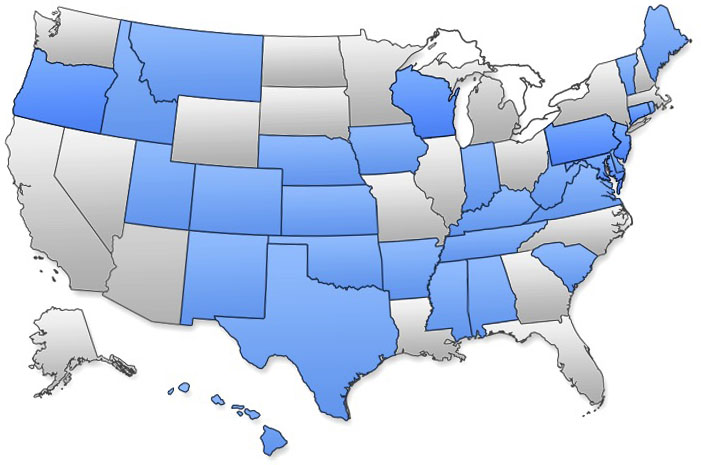
Our Goals
We enable citizens and businesses to conduct business with the government securely and efficiently using all digital channels. We also manage the official website for the State of Hawaii. Our goal is to make interacting with the government easier for the public by bringing services online and improving government efficiency. We leverage our self-funded model to deliver services to our government partners with very little risk or cost for development.
What We Do
While we operate as a for-profit company, state agencies, counties and local government can in many cases, work with us at no cost by utilizing our unique self funded model.
- Build customized online applications (e.g., searching for data, submitting forms, renewing licenses, buying permits, mobile applications and paying taxes)
- Provide Managed Enterprise Services (e.g. Licensing, Document Management, Secure Data)
- Process electronic payments including credit cards, eChecks, invoiced payments and paper checks
- Outreach and Marketing of online services on behalf of our partners
- Offer customer service through phone, email, and live chat
- Offer consulting services to help improve government websites and online applications
- Build and design websites for government agencies as well as offering content management services to easily manage the website after completion (for non technical users)
- Website and application hosting & development
Oversight of Our Operation
The twentieth Legislature, in 2000 passed Act 292 establishing the Access Hawaii Committee (AHC) to oversee the state of Hawaii’s internet portal activities.
Pursuant to Act 292, the AHC coordinates the activities of HIC and the departments and agencies that utilize the Portal. The committee provides oversight of the portal manager including:
- Review of the annual strategic plan and periodic reports on potential new applications and services submitted by the portal manager;
- Review and approval of all charges to portal users;
- Review and approval of service level agreements negotiated by government agencies with the portal manager;
- Review of the annual financial reports and audit of the portal manager;
- Review of annual customer satisfaction surveys conducted by the portal manager; and
- Review of performance measures of the portal submitted as part of the service management plan for portal-wide indicators and application specific indicators.
Portal Staff
As of November 2014, HIC has 32 full time employees.
Russell Castagnaro | Jing Xu | Zheng Fang | Janet Pick |
|---|---|---|---|
| President & General Manager | Director of Marketing & Operations | Director of Development | Project Management Office |
CMS
Rosie Warfield | Nathan Hutchinson | Rika Torres |
|---|---|---|
Manager of eGovernment | Web Coding & CMS Specialist | Web Coding Specialist |
Customer Service & Office Administration
Emily DaSilva | Ann Yuasa | Jamie Kinion | Gabriel Bundac | Nicolas Choy |
|---|---|---|---|---|
| Office Manager | Assistant Office Administrator | Customer Liaison | Customer Service | Customer Service |
Project Managers
| |||
DeAnna Niderost | Julie Shohet | Jerome Koehler | Tony Tran |
|---|---|---|---|
| Project Manager | Project Manager | Project Coordinator | Project Manager |

Partner Liaisons & Quality Assurance
Burt Ramos | Laurenz Bacungan | Teri Berschneider | Carrie Miyasato | Caryn Pang |
|---|---|---|---|---|
| Partner Liaison | Partner Liaison | Partner Liaison | Partner Liaison | QA Analyst |
Systems Administrators
Matt Taniguchi | Julian Yap |
|---|---|
| Systems Administrator | Sr. Systems Administrator |
Design Team
Patrick Nakamura | Corey Rothwell | Jenly Chen |
|---|---|---|
| Manager of Creative Services | Responsive Web App Developer | Responsive Web App Developer |
Developers
Ernest Criss | Sebastien How | Matt Skoda | Aga Wichrowska | Jordan Laimana | Isaac Strauss |
|---|---|---|---|---|---|
| Lead Developer | Developer | Developer | Developer | Developer | Developer |
Funding Portal Operations
Self Funded Model
eHawaii.gov is funded under a self-funded model. In most cases, there is no upfront cost for development of a new online service or application to the State or local government agency we are working with. Development for these applications also does not require any General Fund expenditures from the State.
We generate revenue through transaction fees for the online services we build. These fees can either be passed on to the fee payer as a portal administration fee or absorbed by the agency, essentially funding the service with the avoided costs associated with electronic entry and automation.
This revenue allows HIC to re-invest a large portion back in to the infrastructure and staff required to build, manage, and enhance the state’s eGovernment initiatives. It also allows us to develop no-cost applications where appropriate. These types of applications generally have a high public value or dramatically enhance public safety. Some examples include: Hawaii sex offender search, Electronic Bench Warrants (eBW), unclaimed property search, and the Hawaii State calendar for meeting and events.
Under the self funded model, it's in both our partner agencies and HIC's best interest to encourage high adoption. We employ various marketing techniques to encourage people and businesses to use our online services. HIC absorbs the risk in developing an application because if a service is under-utilized or not used at all, HIC does not generate any revenue. This provides a natural incentive to market our services on the agencies' behalf, develop them rapidly, and improve them often. Our success is tied to our partners' success...and HIC will do everything it takes to make sure we are the best partner they have ever had.
If our partners had to pay for the time that HIC has worked on self-funded projects, not including the infrastructure and common tools, it would have cost more than $2 million. The three agencies leveraging the portal for self-funded applications are:
- Department of Commerce and Consumer Affairs
- Department of Land and Natural Resources
- Department of the Attorney General
Time and Materials
When transaction fees are not feasible we can still offer services with our contract hourly development rates. In most cases, this funding model is used when an agency wants to develop an online service that has an existing funding model (i.e. Federal Grants) or the service doesn’t generate any revenue but requires significant development and maintenance. The Office of Information Management and Technology was the department that leveraged the portal's T&M services the most followed by the Department of Business, Economic Development and Tourism and Department of Land and Natural Resources.
Hosting
Some partners leverage our hosting services for web site hosting or HIC developed services that have no revenue base. In certain scenarios, a partner may already have a service developed that only needs a server to be hosted on to continue providing service to the public. Please contact us for more information and pricing on how we can host your existing application.
No Cost Projects
Most portal projects have no development cost associated with them. HIC recovers its costs for development, deployment, hosting and maintenance by portal administration fees for Self-Funded applications. There are many applications which the portal supports at no cost to the state and which have no way to generate revenue. In select cases, selected by the Access Hawaii Committee and HIC, the portal will support these applications at no cost.
In addition to the maintenance of our existing applications, the portal does work on a limited number of high-value applications at no cost. Examples include:
Judiciary - Electronic Bench Warrants: judiciary.ehawaii.gov/warrants
Hawaii.gov: hawaii.gov
Covered Offenders Database: sexoffenders.ehawaii.gov
Budget and Finance - Unclaimed Property Search: ehawaii.gov/lilo/app
Judiciary - Volunteers in Public Service: vips.ehawaii.gov
DLIR - Quarterly Wage Reporting: hui.ehawaii.gov
Statewide Calendar: calendar.ehawaii.gov
Boards & Commissions Online Application: boards.hawaii.gov/apply/apply-for-a-board
eDeposits: An electronic replacement for the Treasury Deposit Reports.
Contact Information
Hawaii Information Consortium, LLC
201 Merchant Street
Suite 1805
Honolulu, HI 96813
(808) 695-4624
hic.ehawaii.gov
Russell Castagnaro, General Manager
russell@ehawaii.gov
(808) 695-4615
Jing Xu, Director of Operations
jing@ehawaii.gov
(808) 695-4614